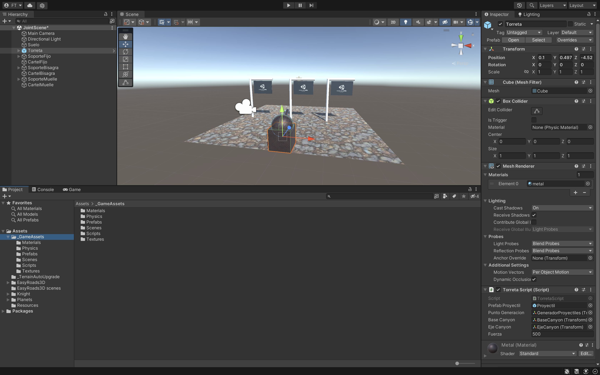

Haremos un cañon y 3 letreros. Al dispararlos cada cartel se comportará de distinta manera.
Para ello necesitaremos una estructura de carpetas que tendrán el
contenido necesario para hacer el juego que lo iremos incluyendo poco a poco:
_GameAssets
• Materials.
o Materiales que se crean a partir de Texturas poniendolos en el Albedo.
• Prefab.
o Torreta.
o Proyectil.
• Scenes.
o JointScene.
• Scripts.
o Torreta.cs.
• Textures para la torreta, carteles, suelo.
Tendremos que crear dentro de esta escena:
• Suelo.
• Torreta.
• SoporteFijo.
o Poste Vertical.
o Poste Horizontal.
• CartelFijo.
• SoporteBisagra.
o Poste Vertical.
o Poste Horizontal.
• CartelBisagra.
• SoporteMuelle.
o Poste Vertical.
o Poste Horizontal.
• CartelMuelle.

La Torreta mira hacia el forward (Z hacia delante). Será un cubo y contendrá:
• BaseCanyon que sea una esfera.
o EjeCanyon GO vacio.
- Canyon un cilindro.
- GeneradorProyectiles GO vacio.
Cada Poste Horizontal tendrá distinto componente Joint. Pero todos deberán tener un Rigidbody:
• Poste Horizontal Fijo: Componente Fixed Joint. Restringe el movimiento de un objeto,
haciendolo dependiente de otro.
• Poste Horizontal Bisagra: Componente Hinge Joint. Agrupa dos cuerpos rígidos. Ideal para
puertas, pendulos…
• Poste Horizontal Muelle: 2 Componentes Spring Joint. Es una Junta elástica. Conecta dos
cuerpos rígidos pero permite que la distancia entre ellos cambie como si estuvieran conectados
como un resorte.
¿Que les pasa a los Soportes cuando se ejecuta el juego?
Tendrá asociado un script Torreta.cs.
• Disparamos con el Espacio con: Input.GetKeyDown(KeyCode.Space) y generamos la bala en
GeneradorProyectiles.
• Con las flechas movemos el cañon y el cilindro:
o Para recoger las flechas del teclado en una variable con: Input.GetAxis en dos variables
yR (Horizontal) y xR(Vertical).
o BaseCanyon (es la esfera) se rota en Y (Horizontal) y EjeCanyon se rota en X (Vertical).
Haremos la Primera Parte y comprobaremos su funcionamiento y luego lo eliminaremos y haremos la
Segunda Parte para controlar que no se nos pase de unos limites la Torreta:
• Primera Parte.
o Update.
- Usaremos: Rotate(x,y,z).
- BaseCanyon.Rotate rota en el eje yR (Input en Horizontal).
- EjeCanyon.Rotate rota en el eje xR (Input Vertical).
¿Que le pasa a la rotación del EjeCanyon cuando se ejecuta el juego?
• Segunda Parte.
Para hacer la Segunda Parte comentaremos lo anterior para que no interfiera.
Si observamos se pasa la rotación así que tendremos que ajustarlo con unos límites.
•BaseCanyon:
• Start.
o rotacionHorizontal = baseCanyon.rotation.y.
• Update.
o rotacionHorizontal += yR es una Rotación acumulada en Horizontal.
o Buscar método Clamp. Para que no se pase de -90 y 90.
o baseCanyon = Quaternion.Euler y le ponemos la rotaciónHorizontal que hemos obtenido al
resultado del Clamp.
Lo mismo habría que hacer para el ejeCanyon pero con X. Cuidado porque ira al revés de las flechas.
¿Qué pasa con el ejeCanyon cuando gira la baseCanyon?.